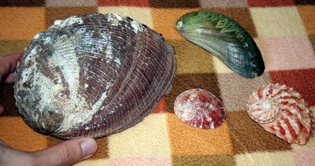

ГЛАВА 8 Моделирование порядковых и счетных переменных
8.1 Модель логита для порядковой переменной
Если категории отклика являются упорядоченными, то можно воспользоваться этой дополнительной информацией и построить потенциально более качественную модель логистической регрессии с более простой интерпретацией результатов, чем модель, основанную на использовании дискретных классов отклика. Пусть для произвольной порядковой случайной величины \(Y\), изменяющейся на интервале от 1 до \(J\), справедливо неравенство
\[P(Y \leq 1 ) \leq P(Y \leq 2) \leq \dots \leq P(Y \leq J),\]
определяющее процесс накопления вероятности
\[P(Y \leq 1) = \pi_1+ \dots + \pi_j, \, \, j = 1, \dots, J.\]
Тогда модель для оценки логарифма отношения накопленных шансов, или кумулятивного логита (cumulative logit), будет иметь вид:
\[ \text{logit}[P(Y \leq j)] = \log \left[ \frac{\pi_1 + \dots \pi_j}{\pi_{j+1} + \dots \pi_J} \right] = \alpha + \beta \mathbf{x}, \, \, j = 1, \dots, J-1, \]
где параметр \(\alpha_j\) определяет величину, на которую увеличивается логарифм отношения шансов при включении вероятности \(\pi_j\), а коэффициенты линейной модели \(\beta\) не зависят от номера группы \(j\) и отражают эффекты воздействия независимых переменных. На рис. 8.1 показан пример такой модели с одинаковым эффектом независимой переменной \(x\) на каждую из трех функций накопленных вероятностей отклика с четырьмя категориями: видно, что происходит пропорциональный сдвиг кривых вправо, определяемый величиной коэффициента \(\alpha_j\).
Рисунок 8.1: Кривые накопленных вероятностей для модели пропорциональных шансов
Мы распрощаемся с ирисами Фишера, классы которого независимы, и рассмотрим пример модели кумулятивного логита на основе данных о популяции вкусных брюхоногих моллюсков - морских ушек (Haliotis species). Выборка из 8 морфометрических показателей 4177 особей этого вида, отловленных у берегов Тасмании, также может быть скачана из архива UCI Machine Learning Repository. Возраст моллюсков определяют, прорисовывая и окрашивая раковину по конусу, после чего подсчитывают число колец под микроскопом. Это - скучная и отнимающая много времени работа, поэтому ставится задача предсказания возраста морского ушка по физическим измерениям.

Познакомимся с анализируемой выборкой:
abalone <- read.csv("data/abalone.data", header = FALSE)
names(abalone) <- c("пол", "длина", "диаметр", "высота", "вес.общ",
"вес.тела", "вес.внут", "вес.рак", "rings")
summary(abalone[, c(1, 2, 9)])## пол длина rings
## F:1307 Min. :0.075 Min. : 1.000
## I:1342 1st Qu.:0.450 1st Qu.: 8.000
## M:1528 Median :0.545 Median : 9.000
## Mean :0.524 Mean : 9.934
## 3rd Qu.:0.615 3rd Qu.:11.000
## Max. :0.815 Max. :29.000Показатель rings, который мы не стали переводить на русский язык - упомянутое число возрастных колец на раковине моллюска. Отловленные животные принадлежат к трем группам по показателю пол: мужской (M), женский (F) и ювенильные особи (I). Построим несколько графиков с использованием пакетов ggplot2 и ggcorrplot, которые позволяют сделать некоторые важные предварительные выводы. В частности, а) морфометрические показатели сильно коррелируют как между собой и, в несколько меньшей мере, с числом колец rings (рис. 8.2), б) между ними существует визуально отчетливая линейная зависимость, имеющая разный коэффициент угла наклона для разных половых групп (рис. 8.3):
require(ggplot2) ; library(ggcorrplot)
# Rорреляционная матрица
M <- cor(abalone[, 2:8])
ggcorrplot(M, hc.order = TRUE, type = "lower",
colors = c("white","yellow","purple" ), lab = TRUE)Рисунок 8.2: Корреляционная матрица морфометрических показателей
# Линейная зависимость
ggplot(abalone) + aes(длина, rings, color = пол) +
geom_point() + labs(x = "Длина раковины",
y = "Число колец", color = "Пол") +
stat_smooth(method = "lm", se = FALSE, size = 2)Рисунок 8.3: Зависимость числа колец от длины раковины
Разделим интервал варьирования rings на диапазоны и выделим четыре возрастные группы. С точки зрения теории информации назначение границ предпочтительнее всего осуществить из условия равной численности групп. Рассмотрим предварительно функцию плотности распределения и границы квартилей для возможного разделения (рис. 8.4):
ggplot(abalone) + aes(rings, fill = пол) +
geom_density(position = "stack")+
geom_vline(xintercept = quantile(abalone$rings,
p = c(0.25, 0.5, 0.75)),
colour = "blue", linetype = 5, size = 1.5)Рисунок 8.4: Плотность распределения числа колец раковины и границы квартилей
table(cut(abalone$rings,
breaks = quantile(abalone$rings, c(0, .25, .50, .75, 1),
include.lowest = TRUE)))##
## (1,8] (8,9] (9,11] (11,29]
## 1406 689 1121 960Однако из практических соображений мы несколько скорректируем диапазоны, обозначенные квартилями, переместив объекты с 8 возрастными кольцами в группу более старых особей. Добавим новый столбец Возраст с четырьмя возрастными категориями в исходную таблицу abalone и сохраним ее в преобразованном виде в файле abalone.RData:
abalone$Возраст <- cut(abalone$rings, breaks = c(0, 7, 9, 11, 29),
labels = c("Q1", "Q2", "Q3", "Q4"), include.lowest = TRUE)
save(abalone, file="data/abalone.RData")
table(abalone$Возраст)##
## Q1 Q2 Q3 Q4
## 839 1257 1121 960Сама по себе идея перейти от счетной переменной к категориальной переменной-фактору может показаться дискуссионной, но она дает нам возможность приступить к построению моделей с порядковым откликом. Модель кумулятивного логита получим с использованием функции polr() из пакета MASS.
library(MASS)
CL.aq <- polr(Возраст ~ ., data = abalone[, -9])
summary(CL.aq, digits = 3)## Call:
## polr(formula = Возраст ~ ., data = abalone[, -9])
##
## Coefficients:
## Value Std. Error t value
## полI -0.9424 0.0934 -10.090
## полM 0.0542 0.0748 0.724
## длина 1.5643 1.6722 0.935
## диаметр 9.2270 2.0472 4.507
## высота 13.4736 2.1206 6.354
## вес.общ 6.3932 0.7897 8.095
## вес.тела -15.3736 0.9126 -16.846
## вес.внут -7.1420 1.2760 -5.597
## вес.рак 7.3099 1.2157 6.013
##
## Intercepts:
## Value Std. Error t value
## Q1|Q2 4.056 0.326 12.447
## Q2|Q3 6.540 0.341 19.206
## Q3|Q4 8.487 0.344 24.644
##
## Residual Deviance: 8224.074
## AIC: 8248.074# Оценка доверительных интервалов коэффициентов
confint.default(CL.aq)## 2.5 % 97.5 %
## полI -1.12547618 -0.7593602
## полM -0.09236741 0.2006869
## длина -1.71315347 4.8417381
## диаметр 5.21461784 13.2394216
## высота 9.31738606 17.6298645
## вес.общ 4.84535657 7.9410052
## вес.тела -17.16223162 -13.5850167
## вес.внут -9.64297569 -4.6411202
## вес.рак 4.92703181 9.6926746Заметим, что блок коэффициентов состоит из двух разделов: коэффициенты \(\beta\) для независимых переменных и оценки параметра \(\alpha\), корректирующие отношение шансов при каждом шаге объединения альтернатив. Расчет доверительных интервалов показал, что два коэффициента \(\beta\) статистически незначимы, поскольку их доверительный интервал включает число 0.
Выше отмечалась высокая мультиколлинеарность данных, т.е. высокая степень взаимной зависимости морфометрических показателей. Считается, что наиболее эффективный путь устранения мультиколлинеарности - исключение из регрессионной модели малозначимых коэффициентов, или, выражаясь точнее, отбор информативного комплекса из \(q\) переменных (\(q < m\)). Пошаговый регрессионный анализ, выполняемый функцией stepAIC(), представляет собой последовательную процедуру включения и исключения отдельных предикторов в модель, пока не будет достигнута оптимальная регрессия по критерию Акаике.
В результате проведенной пошаговой процедуры был исключен показатель длина, а AIC-критерий уменьшился с 8248 до 8247. Однако последующие итерации не привели к его дальнейшей оптимизации (мы опускаем итоги расчетов, поскольку они незначительно отличаются от приведенных выше). Тест на адекватность полученной модели в целом проведем, сравнивая отношения правдоподобия нуль-модели без параметров (1) и модели CLs.aq (2):
CLs.aq <- stepAIC(CL.aq, trace = 0)
summary(CLs.aq, digits = 3) ## Call:
## polr(formula = Возраст ~ пол + диаметр + высота + вес.общ + вес.тела +
## вес.внут + вес.рак, data = abalone[, -9])
##
## Coefficients:
## Value Std. Error t value
## полI -0.9362 0.0932 -10.050
## полM 0.0543 0.0748 0.727
## диаметр 10.8596 1.0748 10.104
## высота 13.5475 2.1215 6.386
## вес.общ 6.3884 0.7892 8.095
## вес.тела -15.3126 0.9094 -16.838
## вес.внут -7.0295 1.2696 -5.537
## вес.рак 7.3018 1.2154 6.008
##
## Intercepts:
## Value Std. Error t value
## Q1|Q2 3.949 0.304 12.985
## Q2|Q3 6.432 0.319 20.167
## Q3|Q4 8.381 0.324 25.877
##
## Residual Deviance: 8224.946
## AIC: 8246.946confint.default(CLs.aq) ## 2.5 % 97.5 %
## полI -1.11880720 -0.7536482
## полM -0.09222309 0.2008834
## диаметр 8.75300690 12.9662538
## высота 9.38953548 17.7055367
## вес.общ 4.84166899 7.9351000
## вес.тела -17.09499191 -13.5301786
## вес.внут -9.51779485 -4.5411468
## вес.рак 4.91963761 9.6840239CL0.aq <- polr(Возраст ~ 1, data = abalone[, -9])
anova(CL0.aq, CLs.aq)## Likelihood ratio tests of ordinal regression models
##
## Response: Возраст
## Model
## 1 1
## 2 пол + диаметр + высота + вес.общ + вес.тела + вес.внут + вес.рак
## Resid. df Resid. Dev Test Df LR stat. Pr(Chi)
## 1 4174 11484.659
## 2 4166 8224.946 1 vs 2 8 3259.712 0Модель имеет высокую статистическую значимость, что практически всегда бывает, если число наблюдений превышает несколько тысяч.
Рассмотрим теперь эффективность использования построенной модели для прогнозирования возраста моллюсков. С помощью функции fitted() найдем значения вероятностей для каждой из 4 рассматриваемых градаций, которые вычисляются на основе оценок коэффициентов \(\alpha_j\) и \(\beta\) для модели CLs.aq. Отнесение каждого объекта выборки к конкретной возрастной категории будем осуществлять по максимальной вероятности. Как всегда, функция table() поможет нам выделить несовпадение действительных и предсказанных значений возрастных категорий.
Probs <- fitted(CLs.aq)
head(Probs, 3)## Q1 Q2 Q3 Q4
## 1 0.16982105 0.5401767 0.23502603 0.05497617
## 2 0.42821924 0.4714134 0.08472626 0.01564114
## 3 0.03303907 0.2572052 0.45143960 0.25831610# Построение матрицы неточностей "Факт-Прогноз"
pred <- apply(Probs, 1, function(x) colnames(Probs)[which(x == max(x))])
(table(Факт = abalone$Возраст, Прогноз = pred))## Прогноз
## Факт Q1 Q2 Q3 Q4
## Q1 589 233 14 3
## Q2 113 773 306 65
## Q3 22 379 446 274
## Q4 6 144 292 518Acc <- mean(pred == abalone$Возраст)
paste("Точность=", round(100*Acc, 2), "%", sep = "")## [1] "Точность=55.69%"Можно отметить, что модель недостаточно хорошо справилась с предсказанием смежных возрастных категорий.
Многомерность параметров модели не позволяет показать графически изменение вероятности классов в зависимости от значений всех предикторов одновременно. Распространено мнение, что это можно сделать для отдельных предикторов, если зафиксировать значения остальных независимых переменных на уровне их средних значений. Выполним такой частный анализ, например, для диаметра раковины (см. рис. 8.5):
# Подготовка данных для графика
VM <- apply(abalone[, 2:8], 2, mean)
d.plot <- as.data.frame(matrix(VM, ncol = 7, nrow = 50,
byrow = TRUE,
dimnames = list(1:50, names(VM))))
d.plot <- cbind(пол = rep("F", 50), d.plot)
d.plot$диаметр <- seq(min(abalone$диаметр),
max(abalone$диаметр), len = 50)
d.pplot <- cbind(d.plot, predict(CL.aq, newdata = d.plot,
type = "probs", se = TRUE))
# Прорисовка компонент графика
plot(1, 1, xlim = c(0, max(abalone$диаметр)), ylim = c(0, 0.8),
type = 'n', xlab = "Диаметр раковины", ylab = "Вероятность Р")
lines(d.pplot[, c(3, 9)], lwd = 2, col = "green")
lines(d.pplot[, c(3, 10)], lwd = 2, col = "blue")
lines(d.pplot[, c(3, 11)], lwd = 2, col = "black")
lines(d.pplot[, c(3, 12)], lwd = 2, col = "red")
legend("topright", c("Q1", "Q2", "Q3", "Q4"), lwd = 2,
col = c(3, 4, 1, 2))Рисунок 8.5: Вероятности отнесения моллюсков к возрастным категориям в зависимость от диаметра раковины
На рис. 8.5 видно, что экстремальные значения диаметра раковины соответствуют максимальным вероятностям отнесения к младшим и старшим возрастным категориям соответственно слева и справа. Промежуточные значения диаметра, вероятнее всего, приведут к средним возрастам Q4 и Q3.